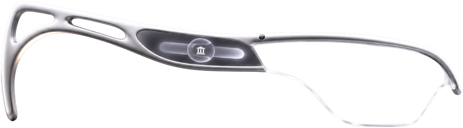
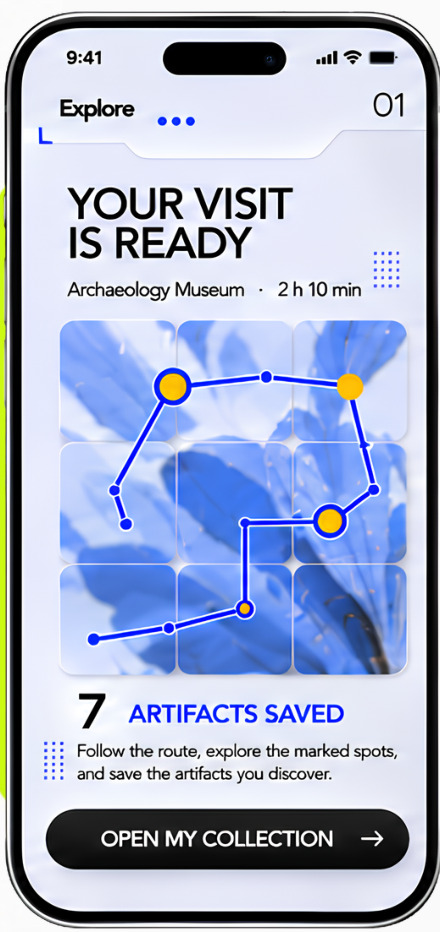

01 / PROTOTİP SÜRECİ
Dijital yerleşim
Kulak çevresindeki yön, hacim ve yüzle ilişki; dijital modeller üzerinde araştırıldı.

Tek taraflı AR gözlüğü
Bakışla başlayan bir deneyim.
Bir müze ziyaretinden geriye ne kalır? TRACE IV, ziyaretçinin dikkatini esere yönlendiren bir gözlük ve ziyaret sonrasına uzanan bir deneyim üzerine tasarım araştırması.
Süreci keşfetMüzeler deneyimi zenginleştirmek için uygulamalar, kulaklıklar ve dijital katmanlar ekliyor. Bu projenin çıkış sorusu ise şu: Bütün bu katmanlar arasında eserin kendisine ne kadar yer kalıyor?
Ziyaretçinin müzeden yanında götürdüğü şeyi artırmak.
Başlangıç noktası: Future Museums araştırmasından TRACE IV’e.
Araştırma, tasarımın yönünü belirliyor: kısa müdahaleler, aktif bakış ve ziyaretin önüne geçmeyen teknoloji.
Sunumda yer verilen çalışmalar, bir eserin karşısında geçirilen ortalama sürenin yaklaşık 30 saniye olduğunu aktarıyor.
Müdahaleyi kısa tut; tek bir ayrıntıya odaklan.
Fotoğraf çekme ve hatırlama üzerine araştırma, bütün nesneyi kaydetmekle bir ayrıntıya odaklanmanın farklı sonuçlar verebildiğine işaret ediyor.
Pasif kayıt yerine aktif, ayrıntıya dönük bakışı destekle.
İndirme, eşleştirme ve kurulum gibi adımlar ziyaretin önünde ek bir eşik oluşturabiliyor. Sunumdaki uygulama kullanım oranı bir tedarikçi iddiası olarak işaretlenmiş.
Ziyaretten önce uygulama indirmeyi zorunlu tutma.
Bu özet sunumdaki araştırma notlarına dayanır. “Eseri yeterince özümsemeden ayrılma” fikri, sunumda dolaylı bulgulardan geliştirilen bir hipotez olarak belirtilmiştir.
Temel tasarım amacı, ziyaretçinin bakışını esere yönlendirmek. Dil ve derinlik seçenekleri bu ortak deneyimin üzerine ekleniyor.
Önce eser.
Sonra ihtiyaç duyulan katman.
Eserin ayrıntısına yönelen bakış ve o ana ait kısa bir hikâye. Minimum kurulumla kullanılabilecek temel katman.
Müzedeki istasyonda seçilen çok dilli anlatım, ortak deneyimin üzerine eklenen bir dil katmanı olarak düşünülüyor.
Rota, kaydedilen eserler ve kişisel arşiv; daha fazla keşfetmek isteyen ziyaretçi için deneyimi müze sonrasına taşıyor.
Önce bakış. Görsel katmanın, ayrıntıya yönelen bakışla açılması hedefleniyor.
Müzenin parçası. Cihazın müze tarafından sağlanması; kurulum, yönetim ve güven sorularına yanıt olarak ele alınıyor.
Ziyaretçinin seçimi. Ziyaret sonrasına yalnızca seçilen kayıtların taşınması planlanıyor.
Organik bir gövde, kontrollü çizgiler, tek taraflı bir yerleşim. Tasarım dili; referanslar, el eskizleri ve form alternatifleriyle gelişiyor.
Akışkan ana gövde, kontrollü keskin hatlar ve belirgin bitişler. Organik form ile hassasiyet arasında kurulan görsel dil.
Göz çevresi, kulak ve şakakla kurulan ilişkiyi araştıran gözlük ve giyilebilir ürün referansları.
Akışkan, organik, damla biçimli ve asimetrik çözümler; yüz üzerindeki farklı yerleşimlerle birlikte araştırılıyor.
AI destekli form görselleri, tasarım dilini ve farklı hacim olasılıklarını incelemek için kullanılan süreç çalışmalarıdır.
Ekrandaki biçim, fiziksel denemelerle yeniden değerlendiriliyor. Oturuş, kulak çevresi ve burun desteği; tasarımın bir sonraki kararlarını belirliyor.
Kulak çevresindeki yön, hacim ve yüzle ilişki; dijital modeller üzerinde araştırıldı.
Düşük detaylı modellerle hacim, oturuş ve kulak çevresindeki temas deneyimi gözlemlendi.
Kulak kancası, kayma, burun desteği ve hijyen algısı; farklı kullanım denemeleriyle yeniden ele alındı.
Prototip panosunda nihai modelin henüz gösterilmediği belirtiliyor. Bu bölüm, mevcut denemeleri belgeliyor.
Tasarlanan müze deneyimini altı adımda izle. Her adım, sunumdaki özgün kullanım senaryosundan alınmıştır.
 KONSEPT SENARYOSU
KONSEPT SENARYOSUKısa bir tanıtım, gözlüğün temel hareketlerini ve ziyaret deneyimini açıklar.
OKLARLA VEYA ADIMLARA DOKUNARAK İLERLE
Gözlükle başlayan deneyim, ziyaret sonrasında kişisel bir arşive dönüşüyor. Kaydedilen eserler, sorular ve ziyaretin izi bir arada.

Ziyaret özeti, müzede izlenen rota ve kaydedilen eserleri bir araya getirir.
Eser bilgisi ve o esere ait kısa hikâye; ziyarette başlayan ilgiyi sürdürür.
Konseptteki soru-cevap akışı, küratör onaylı kaynaklara dayanacak şekilde düşünülüyor.
Ziyaret sırasında seçilen eserler, yeniden keşfedilebilen bir koleksiyona dönüşür.
Tasarlanan uygulama akışında koleksiyonu PDF veya e-posta yoluyla saklama seçenekleri bulunuyor.
Organik dış biçimin altında, etkileşim, ses ve optik katmanları bir araya geliyor. Parçalara dokunarak şemayı keşfet.

Titanyum olarak belirtilen organik dış çerçeve, ürünün akışkan ana formunu kurar.
TRACE IV hâlâ gelişiyor. Bu sayfa, tasarım sürecinin mevcut bir kesiti; yeni denemeler ve kararlarla birlikte güncellenebilir.
Süreç devam ediyorMevcut gözlüklerle birlikte kullanım ve uyum bölümü henüz hazırlanıyor.
Burun desteği ve sabit durma üzerine sorular açık; ilgili bölüm henüz tamamlanmadı.
İsim ve tasarım yaklaşımı arasındaki ilişki için ayrılan bölüm henüz içerik bekliyor.
Panoların tamamı, mevcut içerikleri ve özgün düzenleriyle burada. İncelemek için bir sayfaya dokun.